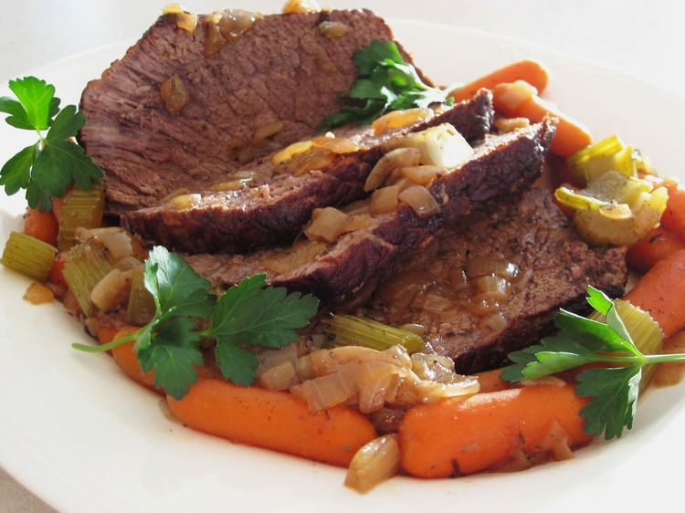

Return Home
Beef Pot Roast

Description
Pot roast is a braised beef dish made by browning a roast-sized piece of beef before slow-cooking the meat in a covered dish, sometimes with vegetables, in or over liquid.
It is a variation of the French dish boeuf à la mode. Pot roast is an American variation of the French dish boeuf à la mode. It is made by browning a roast-sized piece of beef before slow-cooking the meat in a covered dish, sometimes with vegetables, in or over liquid such as wine or beef broth.
ingredients
- 1 (3 pound) beef chuck roast
- salt and pepper to taste
- 1 packet dry onion soup mix
- 1 cup water
- 3 carrots, chopped
- 1 onion, chopped
- 3 potatoes, peeled and cubed
Steps
- Preheat oven to 275 degrees F (135 degrees C).
- Season the roast with salt and pepper to taste.
- Place in a roasting pan or Dutch oven.
- Sprinkle the dry onion soup mix over the meat.
- Pour water over the roast.
- Arrange the carrots, onions, and potatoes around the meat.
- Cover and roast for 3 to 3 1/2 hours.
View Recipe from All Recipes: Beef Pot Roast